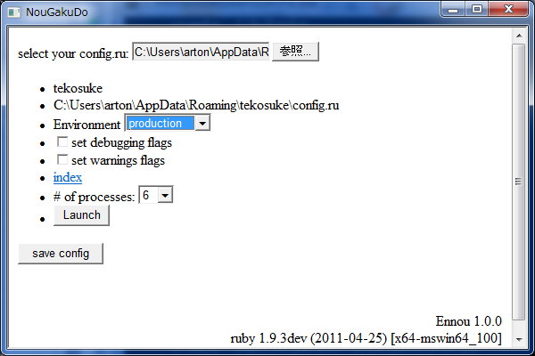
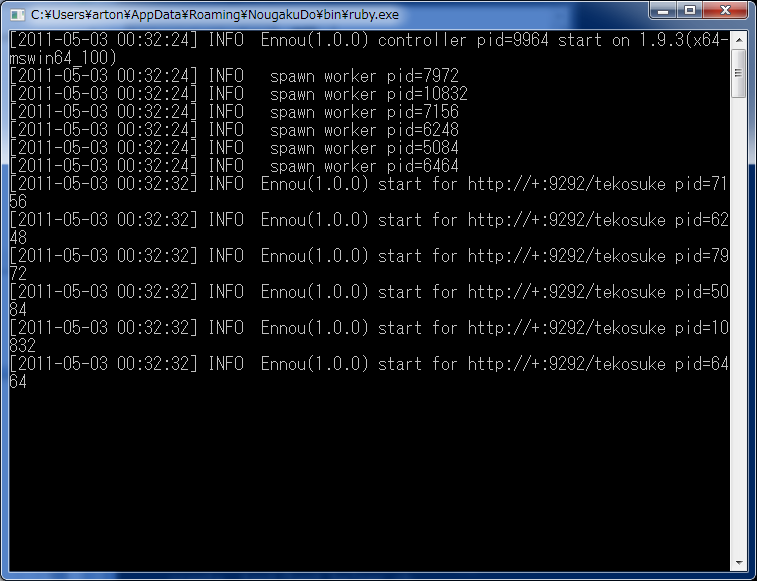

I've just done and released Rails environment for x64 Windows NogakuDo (能楽堂 in Japanese letters). This distribution is very effective in Windows for ease of installation, speed of execution and memory usage as available threads.
In particular, because of calling Http.sys directory in bundled server, NogakuDo is best solution for Rails on Windows.
NogakuDo is characterized by the following.
In other words, NougakuDo is very useful for developing applications for Rails on Windows and the execution platform into just one package.
Require X64 version of Windows that supports HTTP API 2.0.
Ennou - a Rack handler - directly interfaces with Http 2.0 API, it makes possible to multiple processes share the same HTTP port and protocol processing by the service.It improves concurrently requests processing and reduces the overhead of protocol analysis.
It processes more than 20 times faster than WEBrick with one process, and 50 times faster than with three processes. The per a second ability for simple requests - index.html through Rails - about 600 requests with one process.
In spite of above values depends on the machine specification and the bandwidh of the network, I believe Ennou is the best server for Windows.
However the first request for each process is not so fast, the initialization cost for Rails is not so different than other handlers.
This program is licensed with LGPL.So you can freely run, use and redistribute. But if you modify the source, should disclose.
You may download NougakuDo from http://www.artonx.org/data/nougakudo/ using the link. The package is MSI, so the installation process is Windows standard.
When you run it, without any query, only require to click some 'Next'.
The installer automatically put files under your Roaming directory.
Typically, Roaming directory is named \Users\
However, if you inadvertently delete a file in the installation set, MSI automatically detects it and force to reinstall it. This makes some irrits, so please be careful to delete existing files.
Once installed, the Start Menu shows following three icons under NougakuDo folder.
When you select NougakuDo icon from your Start menu, it will be asked to promotion of the administrator.
Calling HTTP API (means interract with Http.sys) requires administrator's rights, so the launcher is also requires the rights.
Then, HTML applicaiton will start to run. On the window's upper side, you'll see the "select your config.ru" message for choosing Rails Rack application's configuration file (usually named config.ru on your Rails application's root directory).

After specifying your config.ru, NougakuDo will get the information required to run applications from the file.
When verifying configu.ru was completed, NougakuDo shows the parameter list on the window.
To start Rails application, set options such as debug and the number of processes, then click 'Launch' button.
The application's URI is http://.
NogakuDo prefers the root application name to separate them, not with the virtual host name. In this case, the application name is the name that specified by the Rails new command, and the name to specified in the config.ru.
After successful launching the application, a black command prompt will appear.
The Rails application that was launched from NogakuDo, even if multiple processes, share a single console.
To stop the execution, you should hit Ctrl-C in that command prompt window.
It restricts to start an application multiple at same time (it's not an application run with multi processes), because Http.sys detects URI confliction.
To start different applications are possible, but it's not supported by NougakuDo 1.0.x. The feature will be supported in 1.1.0 or later.
Without using NougakuDo, you may use Ennou as usual command input style from a command prompt in NougakuDo Start menu. At first, with mouse, point prompt in NougakuDo folder on Start menu, just right click and select "Run as Administrator" on the context menu. If you use WEBrick, this process is not required because Ennou (http.sys) only requires Administrator's privileges.
Next, open a command prompt and rackup your application.
First, cd into the root directory of the application, then run rackup.
At this time, when using Ennou, enter
on the prompt.
For multi-process, specifying the number of processes with config.ru.
In config.ru, just above run line,
Rack::Handler::Ennoumu.config :nprocs => 4 # default is 2 processes, in this example 4 processes
put the number of processes for Rack::Handler::Ennoumu config class method.
The current implementation of Ennou, is makes polling to change http.sys and ruby's thread switch. Thus, in a very short distance it makes a loop for IO completion check.
This causes very aggressive CPU usage (even at 5% usage when idling).
In addition, if an application calls resource such as RDB without unlocking GVL may cause process suspend. At this case, please increase the number of processes running. If I may change my mind, I will add the GVL free OLEDB binding.
If you have questions, requests and bug reports, please use the Issues on https://github.com/arton/ennou.